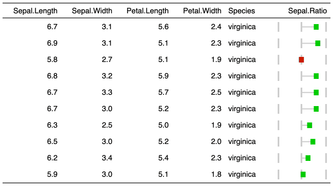

| lollipop {flextable} | R Documentation |
This function is used to insert lollipop charts into
flextable with function compose().
It should be used inside a call to as_paragraph()
lollipop( value, min = NULL, max = NULL, rangecol = "#CCCCCC", bg = "transparent", width = 1, height = 0.2, unit = "in", raster_width = 30, positivecol = "#00CC00", negativecol = "#CC0000", neutralcol = "#CCCCCC", neutralrange = c(0, 0), rectanglesize = 2 )
value |
values containing the bar size |
min |
min bar size. Default min of value |
max |
max bar size. Default max of value |
rangecol |
bar color |
bg |
background color |
width, height |
size of the resulting png file in inches |
unit |
unit for width and height, one of "in", "cm", "mm". |
raster_width |
number of pixels used as width |
positivecol |
box color of positive values |
negativecol |
box color of negative values |
neutralcol |
box color of neutral values |
neutralrange |
minimal and maximal range of neutral values (default: 0) |
rectanglesize |
size of the rectangle (default: 2, max: 5) when interpolating value. |

This chunk option requires package officedown in a R Markdown context with Word output format.
PowerPoint cannot mix images and text in a paragraph, images are removed when outputing to PowerPoint format.
Other chunk elements for paragraph:
as_bracket(),
as_b(),
as_chunk(),
as_equation(),
as_highlight(),
as_image(),
as_i(),
as_sub(),
as_sup(),
colorize(),
gg_chunk(),
hyperlink_text(),
linerange(),
minibar(),
plot_chunk()
iris$Sepal.Ratio <- (iris$Sepal.Length - mean(iris$Sepal.Length))/mean(iris$Sepal.Length) ft <- flextable( tail(iris, n = 10 )) ft <- compose( ft, j = "Sepal.Ratio", value = as_paragraph( lollipop(value = Sepal.Ratio, min=-.25, max=.25) ), part = "body") ft <- autofit(ft) ft